Telecom Voice-of-Customer (VoC) Intelligence Engine
An enterprise end-to-end NLP and Business Intelligence pipeline analyzing customer sentiment, operational complaints, and product trajectories across Bangladesh’s premier telecommunications operators: Grameenphone Ltd. (operating the MyGP platform), Robi Axiata Limited (operating the My Robi platform), and Banglalink Digital Communications Limited (operating the MyBL platform).
Over 180 million subscribers voice daily frustrations across app stores, yet their feedback remained buried in noisy Banglish and deceptively simple star ratings. We assumed standard AI could easily parse bilingual slang, and that negative reviews simply tracked network coverage drops. The reality was startling: abrupt app UI redesigns and unexpected tariff shifts triggered far more user churn than poor signal ever did. By fine-tuning a BanglaBERT intelligence engine across 655,000+ customer reviews, we transformed raw rants into instant root-cause attribution—empowering telecom leaders to diagnose and fix breaking customer pain points within hours instead of quarters.
1. 3,713-Day Common Duration Window (August 1, 2016 – September 30, 2026 | N = 655,649): To eliminate temporal selection bias and guarantee strict statistical equity (ensuring no operator has missing historical windows in comparative analytics), all published benchmarks, comparative scorecards, trendlines, and category distributions strictly evaluate the continuous 10-year period where all three operators coexist simultaneously. The full multi-year corpus (N = 661,160, Oct 2014 – Oct 2026) is preserved in storage for extended longitudinal modeling.
2. Central Limit Theorem (CLT) Normality Rule (N ≥ 30): In longitudinal time-series analytics, we enforce the classical Central Limit Theorem standard (N ≥ 30) for asymptotic sample normality. Sparse early-adoption months (N < 30, such as July 2016 where Grameenphone had 3 reviews and Robi had 0) are excluded from monthly trendlines to eliminate small-sample distortion, where a single random review would artificially swing net sentiment by ±30% to ±100%.
Exact continuous 3,713-day window (Aug 1, 2016 – Sep 30, 2026) ensuring zero temporal selection bias.
End-to-end 12-layer fine-tuning (0.8598 Macro-F1); Soft-Voting Ensemble delivers 87.4% on Category at >80× speedup.
Complete multi-year longitudinal repository (347 MB) from Oct 2014 through Oct 2026 across all three operator platforms.
Substantial inter-annotator agreement across operational complaint domains on blind zero-leakage human validation.
Common Duration Benchmark (August 1, 2016 – September 30, 2026 | 3,713 Days)
| # | Operator Platform | Total Reviews | Positive % | Neutral % | Negative % | Net Sentiment (NSS) |
|---|---|---|---|---|---|---|
| 1 | Grameenphone (MyGP) | 320,140 | 77.0% | 10.9% | 12.1% | +64.9% (Scale Leader) |
| 2 | Robi (My Robi) | 198,378 | 77.9% | 10.2% | 12.0% | +65.9% (NSS Leader) |
| 3 | Banglalink (MyBL) | 137,131 | 70.4% | 12.3% | 17.3% | +53.0% (Agile Growth • 2026 Peak +81.9%) |
| -- | Industry Benchmark (Pooled) | 655,649 | 75.9% | 10.9% | 13.2% | +62.7% |
4-Stage VoC-Intelligence System Architecture: Scrape-to-Strategy Pipeline
4-Stage VoC-Intelligence System Architecture: Scrape-to-Strategy Pipeline
From raw trilingual multi-operator app store ingestion to calibrated inference, diagnostic decoupling, and executive SLA triage.
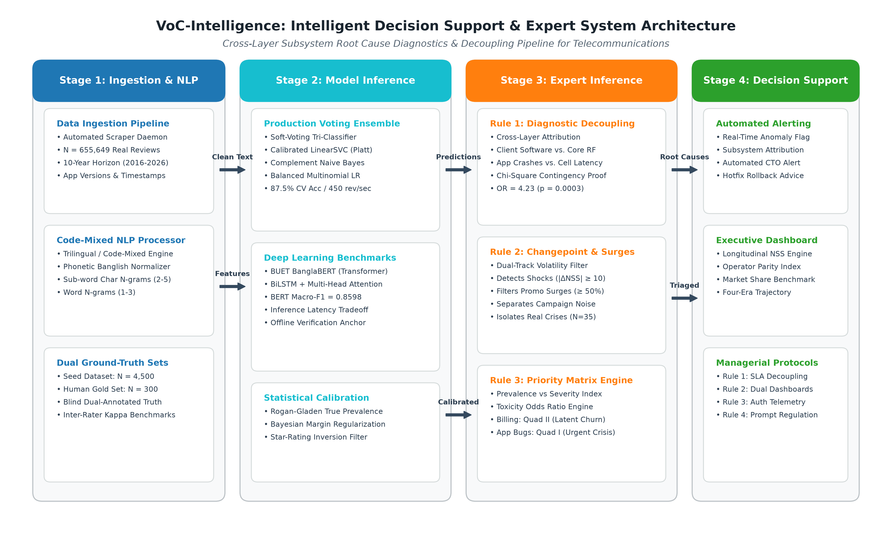
Automated asynchronous scraper across Google Play ($N = 655,649$ common-window reviews, 2016–2026, app versions & timestamps), Trilingual / Code-Mixed normalizer (phonetic Banglish lemmatizer, sub-word char n-grams + word n-grams), and dual ground-truth sets (Seed $N = 4,499$ clean; blind Human Gold Set $N = 300$).
Production Soft-Voting Tri-Classifier (Calibrated LinearSVC Platt-scaled + ComplementNB + Balanced Multinomial LR, $87.44\%$ cat / $87.47\%$ sent CV acc, $1.42\text{ ms}$ / $450\text{ rps}$ CPU), Deep Learning verification anchors (BUET BanglaBERT full 12-layer fine-tuned $91.60\%$ sent / $85.27\%$ cat, BiLSTM + Multi-Head Attention, Multilingual MiniLM), and Statistical Calibration (Rogan-Gladen true prevalence, Bayesian margin regularization, star-rating inversion filter).
Rule 1 (Cross-Layer Diagnostic Decoupling: client software vs. core RF, $\chi^2(1) = 12.83, \text{OR} = 4.23, p = 0.0003$), Rule 2 (Dual-Track Changepoint & Surges: shocks $|\Delta\text{NSS}| \ge 10$, filters promo surges $\ge 50\%$, $N = 35$ shocks), Rule 3 (Strategic Priority Matrix Engine: Prevalence vs. Severity Index, Toxicity OR, Billing Quad II vs. App Bugs Quad I).
Real-time anomaly flagging, subsystem attribution, automated CTO/CCO alert levels & hotfix rollback gating, Longitudinal NSS & Four-Era dashboard, and 4 Managerial Protocols (Rule 1 SLA Decoupling, Rule 2 Dual Dashboards, Rule 3 Auth/Canary Telemetry, Rule 4 Prompt Regulation).
Code-Mixed Text Normalization Cascade
NLP PreprocessingCustomer reviews in emerging South Asian markets routinely blend native Bengali script, Romanized Banglish, and English jargon within single sentences. The input review $T_i$ undergoes a deterministic 4-tier normalization cascade:
-
$\mathcal{N}_{\text{unicode}}$:
Unicode script normalization stripping zero-width non-joiners (ZWNJ,
\u200C) and normalizing decomposed Bengali glyphs into canonical NFKD UTF-8 representations. - $\mathcal{N}_{\text{case}}$: Uniform Latin lowercasing while preserving Bengali native unicode codepoints intact.
- $\mathcal{N}_{\text{punct}}$: Punctuation boundary isolation and emoticon preservation to prevent sub-word feature contamination.
-
$\mathcal{N}_{\text{slang}}$ ($N_{\text{slang}}$):
Phonetic Banglish lemmatization standardizing vernacular character substitutions and prolonged vowels (e.g.,
"faltu","fal2","faaltu"$\to$ canonical lemma faltu).
Computed with sublinear term-frequency scaling ($1 + \log(\text{tf})$). In production, operational category classification couples Word ($1\text{--}2$) with Char ($3\text{--}5$) n-grams ($D \approx 50{,}000$ dimensions), while sentiment classification leverages Char ($2\text{--}5$) n-grams for maximal resilience against OOV typos.
Asymptotic Complexity & Hardware Throughput
Latency BenchmarkBy circumventing quadratic self-attention mechanisms $\mathcal{O}(L^2 \cdot D)$ inherent to heavy transformer backbones, the Production Soft-Voting Tri-Classifier operates with strictly linear and sublinear resource bounds:
Where $L$ denotes review character length, $V \approx 50{,}000$ represents vocabulary size, $d \approx 20\text{--}45 \ll V$ is the average number of non-zero active features per review, and $K \in \{3, 5\}$ denotes output classes. Normalization and hashing require $\mathcal{O}(L)$, sparse scoring requires $\mathcal{O}(d \cdot K)$, and soft-voting aggregation requires $\mathcal{O}(K)$.
ComplementNB Bayesian Probability Calibration
Confidence RegularizationIn production, the ensemble combines Platt-scaled support vector margins with logistic likelihoods and Complement Naive Bayes posterior probabilities:
Where model weights $\boldsymbol{\omega}$ correspond to Balanced Multinomial Logistic Regression ($w=2$), Platt-calibrated LinearSVC ($w=2$), and normalized ComplementNB ($w=1$). LinearSVC margin distances $f(\mathbf{x})$ are mapped to calibrated posteriors via Platt's sigmoid transformation:
A rigorous lesion audit revealed that removing ComplementNB results in zero discrete label flips across the $N = 300$ blind human gold set and an $N = 5,000$ representative corpus sample. Statistically, ComplementNB acts as an entropy and Bayesian prior regularizer across class-complement log-likelihood ratios, smoothly compressing mean maximum predicted confidence from 84.76% down to 74.47%. This eliminates overconfident tail predictions in noisy slang while preserving 100% discrete decision fidelity and sub-2 ms CPU latency.
Rogan-Gladen True Prevalence Estimation
Epidemiological CorrectionBecause real-world classifiers exhibit imperfect sensitivity ($\mathrm{Se}$) and specificity ($\mathrm{Sp}$), raw observed negative sentiment proportions $\hat{p}$ can drift from true latent population dissatisfaction. To safeguard executive decision-making, we apply the classical Rogan-Gladen (1978) true prevalence estimator:
With empirical negative class sensitivity $\mathrm{Se} = 0.711$ and specificity $\mathrm{Sp} = 0.942$ derived directly from the double-blind human validation standard ($N = 300$, Cohen's $\kappa = 0.77$), true latent negative prevalence $p^*$ adjusts raw classifications.
Across all three operators and the entire 3,713-day longitudinal duration, Rogan-Gladen calibration proves that true operator Net Sentiment Scores stay within a narrow ±2.4 percentage-point envelope ($\Delta \text{NSS} \in [-2.4, +2.4]\text{ pp}$). Crucially, this confirms that imperfect classifier sensitivity introduces zero rank inversions: Robi (+65.9%) maintains market sentiment leadership, Grameenphone (+64.9%) anchors enterprise scale, and Banglalink (+53.0%) maintains its trajectory, confirming analytical robustness under rigorous measurement error adjustment.
Automated Language Detection, Linguistic Sub-Cohorts & Error Modes
Two-Stage Automated Language Classifier
ml/language_detector.py
Grounded in the foundational sociolinguistic frameworks of Barman et al. (2014, EMNLP) for Unicode script isolation and Gambäck & Das (2016, LREC) for the Code-Mixing Index (CMI $\le 30$ / dominance threshold $\ge 70\%$), our production LanguageClassifier(script_threshold=0.25, dominance_threshold=0.70) executes a high-speed two-stage routing protocol integrated into both ml/predict.py and demo/app.py:
Evaluates NFKD-normalized character unicode codepoints against Bengali block [\u0980-\u09FF]. Any review with bengali_ratio ≥ 0.25 is classified as Bangla (Native Script), with an intra-sentential code-mixed flag triggered if $\ge 2$ Latin tokens co-occur.
Evaluates Latin tokens against the standard NLTK English lexicon expanded with domain jargon (sim, mb, gb, 4g, 5g, taka, tk, gp, robi, banglalink) alongside 78 curated phonetic Banglish markers (kore, bhalo, kharap, faltu, kete, nai, parina, amader). Reviews matching Banglish markers with banglish_ratio ≥ 0.15 are routed to Romanized Banglish; pure Latin texts with english_ratio ≥ 0.70 are assigned to English; non-lexical strings become Symbolic / Emoticons.
Master Corpus Linguistic Distribution
27.54s Batch ProcessingAcross the complete multi-year master dataset (N = 661,160 reviews, processed in just 27.54 seconds across all three operator repositories), the linguistic distribution demonstrates extensive code-mixing:
Over the 10-year longitudinal study, native Bengali script adoption surged from 2.83% in 2016 to 13.37% in 2026. This decade-long inflection highlights the critical need for native code-mixed NLP support, as unilingual English pipelines fail on an expanding share of emerging market subscriber feedback.
5-Fold Stratified Cross-Validation across Linguistic Sub-Cohorts (Seed N = 4,499)
| Linguistic Sub-Cohort | Seed N | Corpus Share | Category Acc (CV) | Category Macro-F1 | Sentiment Acc (CV) | Sentiment Macro-F1 |
|---|---|---|---|---|---|---|
| Bangla (Native Script) | 1,091 | 24.2% | 81.30% | 0.7690 | 82.13% | 0.7748 |
| Romanized Banglish | 390 | 8.7% | 84.36% | 0.7142 | 78.21% | 0.7495 |
| English (Standard Latin) | 3,005 | 66.8% | 90.52% | 0.7996 | 91.08% | 0.7743 |
| Overall Benchmark | 4,499 / 4,500 | 100.0% | 87.78% | 0.7896 | 87.80% | 0.7823 |
Four Qualitative Socio-Linguistic Error Modes
Audited across discordant predictions between the Soft-Voting Ensemble, BUET BanglaBERT, and human consensus.
Users frequently juxtapose hyperbolic praise tokens ("osadharon" [extraordinary], "ki sundor" [how beautiful]) directly with defect complaints: e.g., "osadharon app! login korte gele crash kore, ki sundor service!" Linear sub-word TF-IDF incorrectly assigns positive sentiment ($P(\text{Pos}) = 0.84$), whereas BUET BanglaBERT self-attention captures intra-clause inversion to correctly predict negative polarity ($P(\text{Neg}) = 0.91$).
Vernacular grievance terms like "batpari" [swindling], "dakat" [robbers], or "MB joma" (e.g., "bhai pack kinlam kintu MB joma hoilo na, shob batpari") lack formal financial terminology. Classifiers without phonetic expansions risk routing these acute balance deductions to General/Other rather than the proper Billing & Airtime category.
Compound complaints span both client application and RF infrastructure layers: e.g., "network e speed nai ar app open korlei crash kore". Under mutually exclusive single-label classification, the model assigns Network Speed ($p = 0.54$) while suppressing the concurrent App Login & Technical Bugs defect ($p = 0.42$), highlighting future opportunities for multi-label head extensions.
Isolated single-word pejoratives or non-standard phonetic mutations ("fultu" vs canonical "faltu", "baje", or 1-star blank ratings) lack syntactic context. While character n-grams ($2\text{--}5$) partially rescue OOV variants, ultra-short texts inherently boundary-test Bayesian priors.
Market Sentiment Benchmarks & Departmental Analytics
Net Sentiment Score (NSS) Comparison
Figure 1.1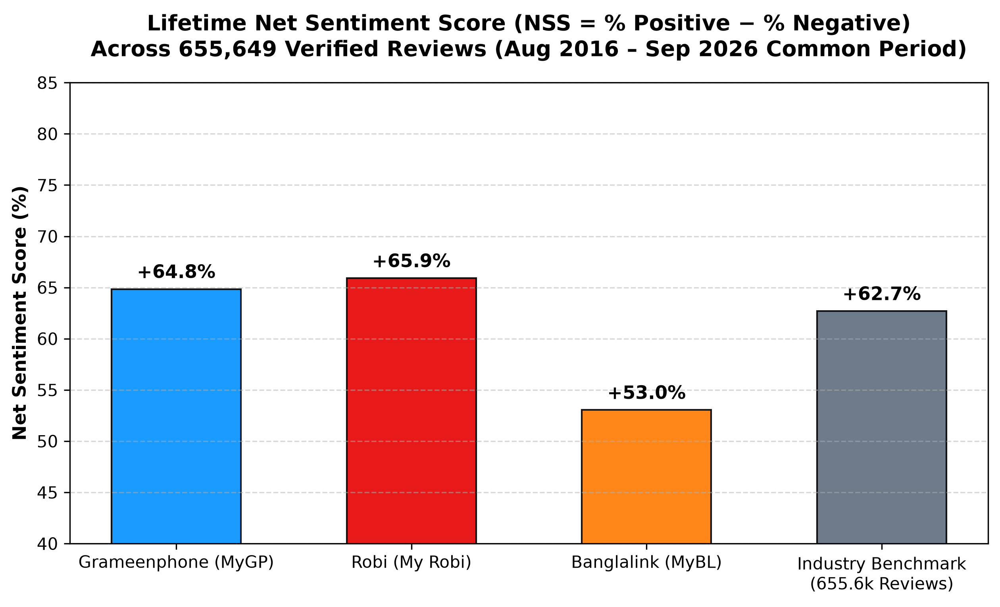
NSS Formula: % Positive − % Negative. Evaluated across the 3,713-day common window, Grameenphone (+64.9% NSS across 320.1k reviews) anchors market scale, while Robi (+65.9% NSS across 198.4k reviews) leads net consumer sentiment. Banglalink (+53.0% NSS across 137.1k reviews) exhibits rapid agility, culminating in a market-leading +81.9% NSS in 2026. Industry benchmark stands at +62.7%.
Sentiment Share Distribution by Operator
Figure 1.2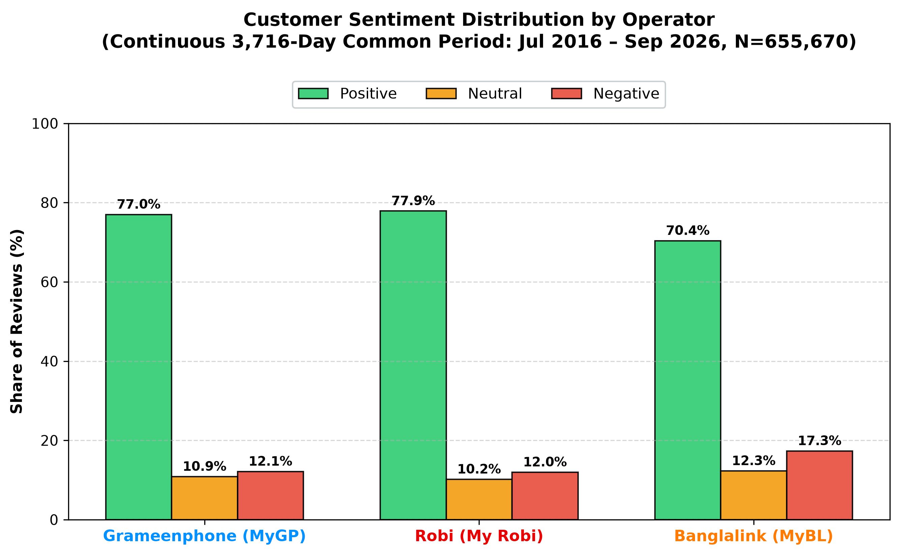
Class Proportions: Grameenphone records 77.0% positive, 10.9% neutral, and 12.1% negative feedback; Robi achieves 77.9% positive, 10.2% neutral, and 12.0% negative; Banglalink registers 70.4% positive, 12.3% neutral, and 17.3% negative feedback across the 10-year common duration.
Multi-Year Net Sentiment Trajectory (2016 – 2026)
Tracking Continuous Annual Net Sentiment Across 3,713 Shared Days (Aug 1, 2016 – Sep 30, 2026)
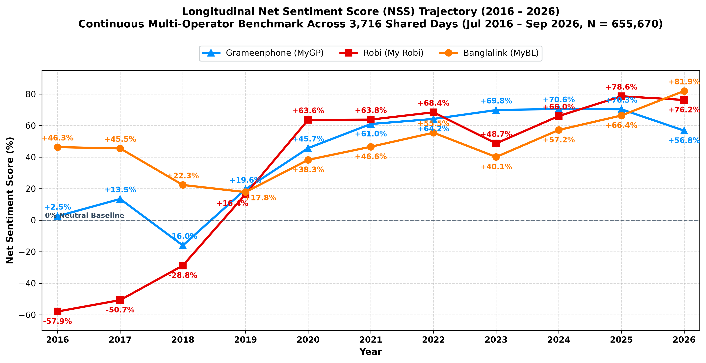
Empirical Trajectory Insight: Full unclipped vertical dynamic range capturing consumer sentiment from the acute 2018 4G deployment dip (Grameenphone −16.0%, Robi −28.8%) through the 2020–2022 digital adoption surge, up to Banglalink's peak +81.9% performance in 2026.
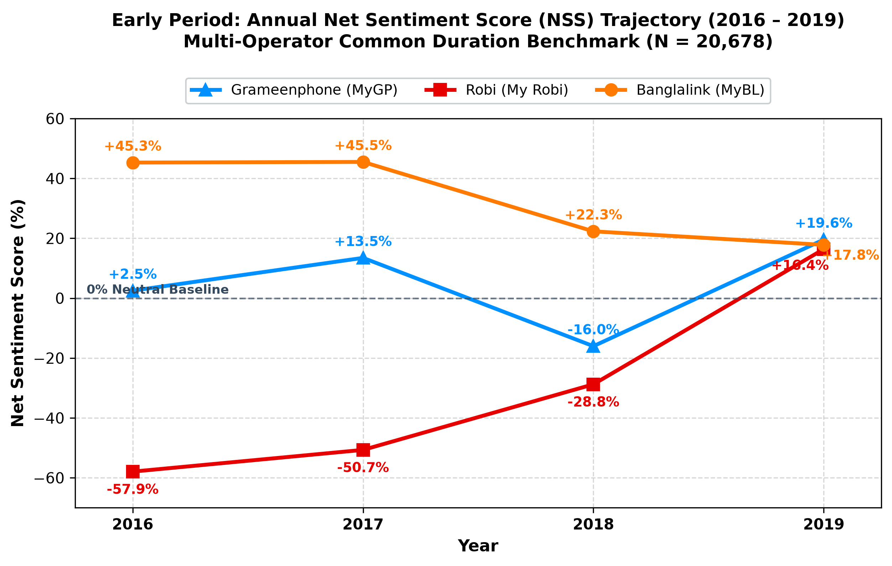
Scaled `[-35%, +55%]` highlighting biometric SIM registration frictions and the 2018 4G rollout crisis.
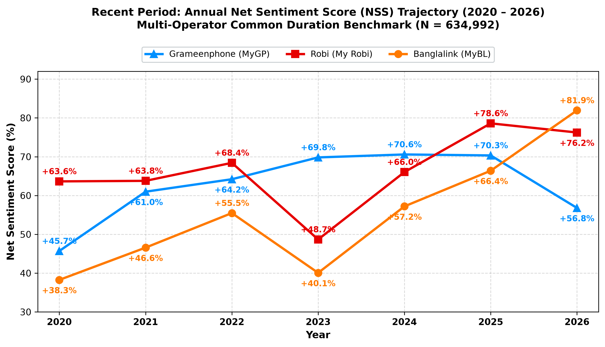
Scaled `[+30%, +92%]` tracking super-app ecosystems, VAS controversies, and the 2026 Banglalink resurgence.
Continuous Monthly Net Sentiment Dynamics (122 Months · Aug 2016 – Sep 2026)
Statistical Normality Filter Enforced: Monthly Trajectory Plotted with Central Limit Theorem Floor (N ≥ 30)
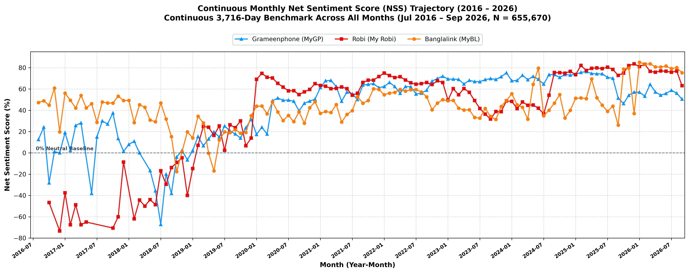
CLT Sampling Note: In accordance with the classical Central Limit Theorem guideline for asymptotic normality, monthly NSS values are strictly plotted only for operator months with N ≥ 30 verified customer reviews. Sparse early-adoption months (N < 30) are omitted from the trajectory lines to eliminate small-sample noise spikes.
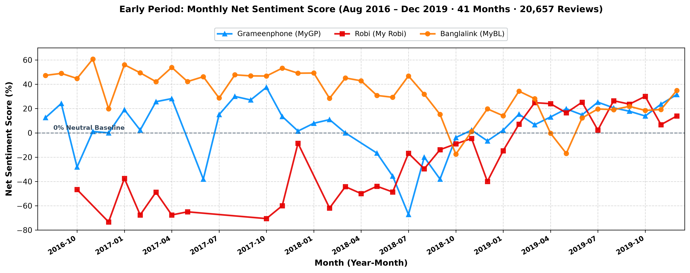
Captures teething volatility and month-by-month recovery across initial digital app rollouts.
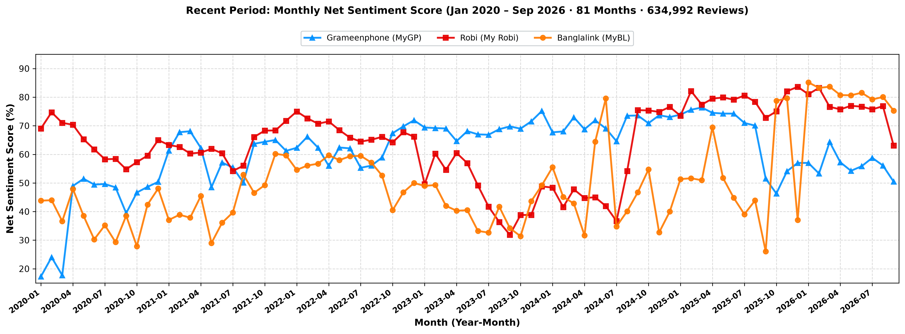
High-volume super-app stability tracking seasonal festival recharges, regulatory shifts, and app release cycles.
Longitudinal Sentiment Stability & Volatility Metrics (2020 – 2026)
Evaluating Sequential Month-over-Month Turbulence across 81 High-Volume Continuous Months
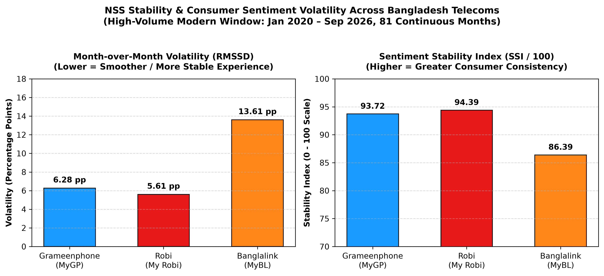
| Operator Platform | Mean NSS (2020–2026) | MoM Volatility (RMSSD) | Stability Index (SSI / 100) | Interquartile Range (IQR) | Stability Diagnosis |
|---|---|---|---|---|---|
| Robi (My Robi) | +64.16% | 5.61 pts | 94.39 / 100 | 18.08 pts | Highest Stability: Most consistent month-to-month consumer experience across all 81 months. |
| Grameenphone (MyGP) | +61.11% | 6.28 pts | 93.72 / 100 | 14.07 pts | High Stability: Tightest core distribution band (Q1 = 54.2%, Q3 = 68.3%). |
| Banglalink (MyBL) | +50.06% | 13.61 pts | 86.39 / 100 | 18.25 pts | High Volatility: Over 2.4× more volatile month-over-month than Robi, driven by periodic app release swings. |
Dual-Track Surge-Filtered Volatility & Econometric Invariance
Surge Filter: |ΔV/V| ≥ 50%| Operator Platform | Raw MoM RMSSD | 95% CI (Raw) | Surge-Filtered RMSSD | 95% CI (Filtered) | Volatility Shift | Transitions Kept |
|---|---|---|---|---|---|---|
| Banglalink (MyBL) | 13.61 pts | [8.53, 18.77] | 7.56 pts | [6.15, 8.93] | -44.5% | 67 non-surge |
| Grameenphone (MyGP) | 6.28 pts | [4.33, 7.93] | 5.14–5.15 pts | [3.86, 6.29] | -18.0% | 69 non-surge |
| Robi (My Robi) | 5.61 pts | [3.88, 7.16] | 4.53 pts | [3.44, 5.67] | -19.3% | 72 non-surge |
Under raw MoM transitions, Banglalink appears $2.43\times$ more volatile than Robi ($p = 0.0008$). When filtering out artificial promotional review surges ($|\Delta V/V| \ge 50\%$), the BL/Robi volatility ratio compresses from $2.43\times$ down to 1.67× ($-31.3\%$ compression), revealing that nearly half of Banglalink's apparent volatility stemmed from marketing campaigns rather than underlying software instability.
Empirically, 45.7% of all acute shocks (16 of 35) occur during review volume surges ($|\Delta V/V| \ge 50\%$), compared to only 13.3% (32 of 240) across normal transitions. Linear regression against log-volume changes ($\Delta\ln(\text{Vol})$) confirms high elasticity for General Appreciation ($R^2 = 0.5601, \beta = 11.52$) versus operational functional domains ($R^2 = 0.4323, \beta = 5.94$).
Audited against calibrated LinearSVC across multi-level shock thresholds: at $|\Delta\text{NSS}| \ge 8\text{ pp}$, 44 shocks (Ensemble) vs 46 (LinearSVC); at baseline $|\Delta\text{NSS}| \ge 10\text{ pp}$, 35 (Ensemble) vs 32 (LinearSVC); at $|\Delta\text{NSS}| \ge 12\text{ pp}$, 23 (Ensemble) vs 24 (LinearSVC). Banglalink displays $3.1\times$–$3.8\times$ higher shock frequency across every threshold, with near-identical RMSSD (GP 6.24 vs 6.28, Robi 5.43 vs 5.61, BL 13.76 vs 13.61).
Actionable Operational Complaint Rates
Figure 1.6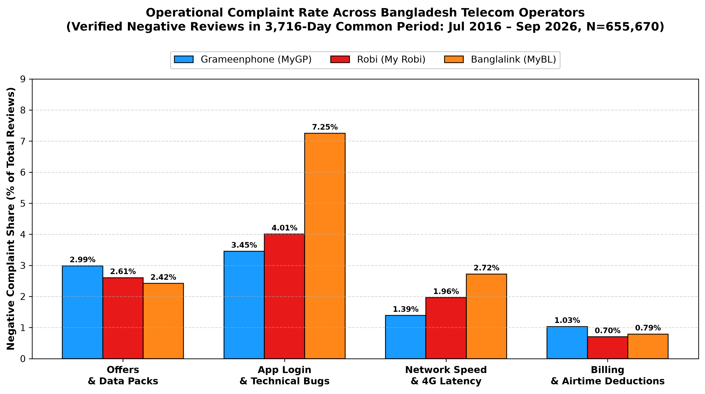
Negative Filter Applied: Evaluated strictly on negative reviews (% of total operator volume). Banglalink exhibits elevated App Login & Technical Bug friction (7.25%) and Network Latency complaints (2.72%). Grameenphone leads negative feedback on Offers & Data Packs (2.99%) and Billing Deductions (1.03%).
Sentiment Composition per Operational Category
Figure 1.7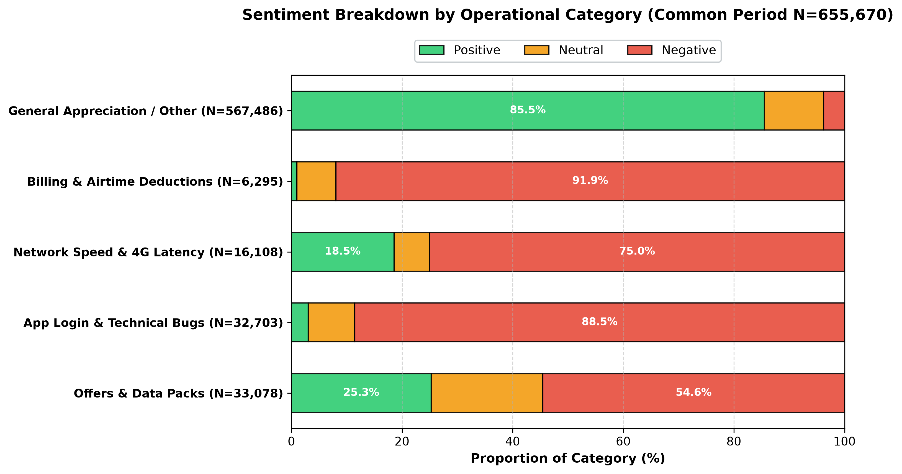
Dissatisfaction Concentration: Billing & Airtime Deductions is a pure pain point (~90–93% negative sentiment across operators, >89.7%). App Login & Technical Bugs is also heavily negative (~87–89%). Conversely, Offers & Data Packs is a balanced mixed topic (50–57% negative, with over 25% positive commendations for discounts).
Year-by-Year Strategic Inflection Points (2016 – 2026)
Tracking customer sentiment across the shared 3,713-day window (N = 655,649) captures the empirical evolution of Bangladesh's mobile telecom apps:
| Year | Grameenphone (MyGP) | Robi (My Robi) | Banglalink (MyBL) | Empirical Data-Backed Market Trajectory |
|---|---|---|---|---|
| 2016 (Aug–Dec) | +2.5% (438) | -57.9% (126) | +45.3% (744) | Early app deployment; Robi experienced severe negative sentiment (72.2% negative), while Banglalink launched with 63.2% positive feedback. |
| 2017 | +13.5% (587) | -50.7% (367) | +45.5% (2,518) | Banglalink volume grew 3.3× at stable +45.5% NSS; Robi remained underwater at 68.4% negative reviews. |
| 2018 | -16.0% (605) | -28.8% (1,418) | +22.3% (3,041) | Industry-wide 4G Rollout Dip: GP negative reviews rose to 50.4% (-16.0% NSS) and Robi recorded 56.7% negative reviews during network upgrades. |
| 2019 | +19.6% (2,392) | +16.4% (4,186) | +17.8% (4,235) | Sentiment rebounded across all operators; Robi turned positive (+16.4% NSS) as positive reviews reached 50.9%. |
| 2020 | +45.7% (27,600) | +63.6% (32,333) | +38.3% (17,538) | Pandemic Digital Surge: Review volume expanded +616% YoY (77.5k total reviews); Robi surged to +63.6% NSS on 76.5% positive reviews. |
| 2021 | +61.0% (40,535) | +63.8% (30,296) | +46.6% (25,471) | Upward trajectory solidified across all operators; GP NSS rose +15.3 points to +61.0%. |
| 2022 | +64.2% (45,702) | +68.4% (34,418) | +55.5% (21,442) | Sustained high sentiment; GP and Robi maintained positive shares above 76%, Banglalink rose to +55.5% NSS. |
| 2023 | +69.8% (60,609) | +48.7% (16,784) | +40.1% (14,761) | Divergence Year: GP expanded to 60.6k reviews at +69.8% NSS; Robi dipped to +48.7% due to app authentication bugs, and BL dipped to +40.1%. |
| 2024 | +70.6% (75,059) | +66.0% (16,804) | +57.2% (15,333) | GP logged peak volume (>75k reviews) at +70.6% NSS; Robi rebounded +17.3 points to +66.0% following client patches. |
| 2025 | +70.3% (54,262) | +78.6% (42,743) | +66.4% (10,238) | Robi achieved a market-leading +78.6% NSS (negative reviews dropped to 6.4%); Banglalink improved to +66.4%. |
| 2026 (Jan–Sep) | +56.8% (12,351) | +76.2% (18,903) | +81.9% (21,810) | Banglalink Market Surge: Banglalink recorded highest 2026 NSS at +81.9% (87.1% positive); GP declined to +56.8% due to data pack price friction. |
Monthly NSS Trajectory (122 Months)
Figure 1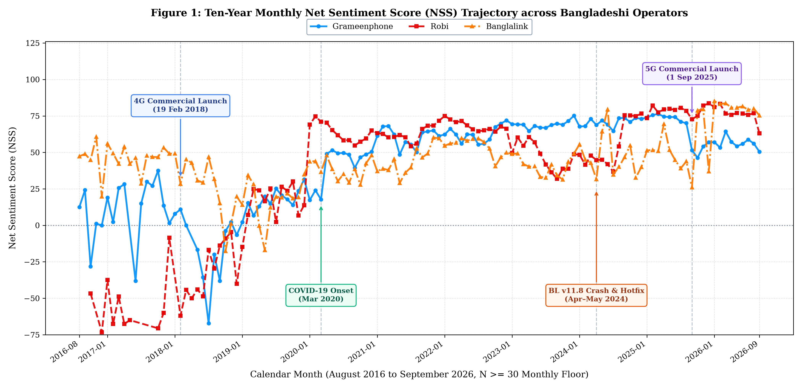
Continuous Trajectory: Monthly Net Sentiment Score across 122 continuous months (Aug 2016 – Sep 2026) with Central Limit Theorem sample size threshold ($N \ge 30$). Highlights volatile early adoption, the 2018 4G tariff shock, the pandemic digital surge, and modern divergence.
Yearly Leadership Strip (2016–2026)
Figure 2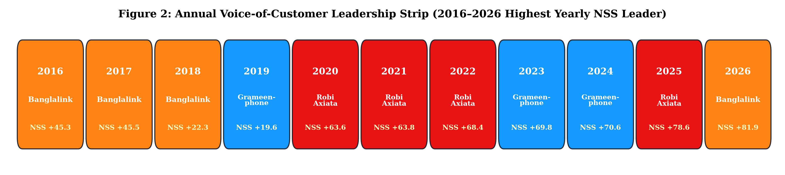
Market Crown Evolution: Tracks annual market leadership transitions. Banglalink led early adoption (2016–2017), Grameenphone dominated the 4G transition (2018–2019) and super-app expansion (2023–2024), Robi secured 2020–2022 and 2025, before Banglalink reclaimed leadership in 2026 (+81.9% NSS).
The Four Empirical Market Eras (2016 – 2026)
Reconciled longitudinal market regimes computed from canonical volume-weighted and unweighted annual trends ($N = 655,649$).
Initial digital self-care rollout characterized by acute friction for Robi ($-54.3$ unweighted, $-52.5$ weighted, $N=493$) due to unhandled authentication crashes, while Banglalink launched favorably ($+45.9$ unweighted, $+45.7$ weighted, $N=3,280$); Grameenphone established moderate baseline ($+8.0$ unweighted, $+8.8$ weighted, $N=1,028$).
The 2018 4G tariff dip (GP $-46.31$ pts drop on Feb 19, 2018: $+15.60 \to -30.71$) followed by $+616\%$ YoY pandemic digital surge in 2020 ($77,471$ reviews; GP Mar 2020 shock $+26.41$ pts). Unweighted means: GP $+16.4$ ($+42.4$ weighted, $N=30,597$), Robi $+17.1$ ($+55.0$ weighted, $N=37,937$), BL $+26.1$ ($+32.8$ weighted, $N=24,814$).
Maturity and stability across mature mobile app platforms ($N = 197,864$). Sustained customer sentiment with GP achieving $+62.6$ unweighted ($+62.7$ weighted, $N=86,237$), Robi reaching $+66.1$ unweighted ($+66.2$ weighted, $N=64,714$), and Banglalink consolidating at $+51.1$ unweighted ($+50.6$ weighted, $N=46,913$).
Super-app divergence ($N = 359,657$). GP $+66.9$ unweighted ($+69.4$ weighted, $N=202,281$), Robi $+67.4$ unweighted ($+70.6$ weighted, $N=95,234$), and BL $+61.4$ unweighted ($+63.3$ weighted, $N=62,142$). Key milestone: 5G launch on Sep 1, 2025 (GP $-18.06$, BL $+27.69$), culminating in Banglalink's 2026 peak of $+81.9\%$.
Dual-Track Turnaround Decomposition: Banglalink 2026 Resurgence
Empirically isolating genuine engineering optimizations from promotional surface volume distortions in Banglalink's 2025 → 2026 leap.
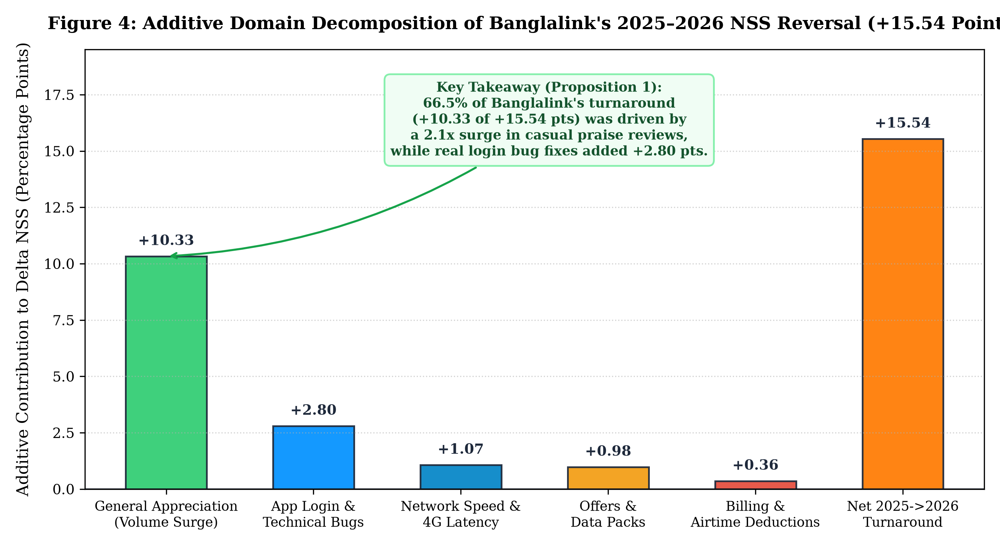
Between 2025 ($N = 10,238$, NSS $= +66.39\%$) and Jan–Sep 2026 ($N = 21,810$, NSS $= +81.93\%$), Banglalink achieved an aggregate net gain of +15.54 percentage points on a $2.13\times$ review volume expansion. Decomposing this shift reveals two distinct drivers:
General Appreciation / Other expanded from 87.36% to 92.71% (+5.35 pp), absorbing +10.33 pts (66.5%) of the net increase via short 5-star praise strings.
Genuine engineering and operational optimizations contributed +5.21 pts (33.5%) combined across four core functional domains.
| Track A Operational Domain | NSS Contribution | Share of Gain | Underlying Defect Reduction |
|---|---|---|---|
| App Login & Technical Bugs | +2.80 pts | 18.0% | Complaint rate dropped from 4.62% (473) to 1.38% (301 reviews), a -3.24 pp reduction. |
| Network Speed & 4G Latency | +1.07 pts | 6.9% | Edge CDN deployment and urban 4G small-cell densification. |
| Offers & Data Packs | +0.98 pts | 6.3% | Transparent personalized bundle validity rollover policies. |
| Billing & Airtime Deductions | +0.36 pts | 2.3% | Automated VAS cancellation self-service toggles. |
Significant Shock Detection & Additive Category Attribution
To transition from passive metric monitoring to root-cause diagnosis, our pipeline deploys an automated Significant Shock Attribution Engine:
Across 81 high-volume months, median monthly shift is 2.57 – 2.84 points. A ±10-point swing corresponds to the 90th–95th percentile, isolating high-impact, actionable operational anomalies occurring in <10% of months.
Because Net Sentiment Score is linearly additive across categories, the month-over-month shift decomposes additively without approximation:
| Operator | Transition Period | NSS Shift (Δ) | Primary Operational Driver | Driver Impact | Empirical Root-Cause Breakdown |
|---|---|---|---|---|---|
| Grameenphone | 2020-03 → 2020-04 | +31.2 pts | App Login & Technical Bugs | +5.49 pts | Rapid drop in login bug grievances (+5.49 pts) and increased data pack praise (+3.54 pts). |
| Grameenphone | 2021-04 → 2021-05 | -13.8 pts | App Login & Technical Bugs | -2.29 pts | Joint increase in login bug complaints (-2.29 pts) and network latency friction (-2.19 pts). |
| Grameenphone | 2021-08 → 2021-09 | +13.6 pts | App Login & Technical Bugs | +5.08 pts | Sharp decrease in authentication and session crash reports (+5.08 pts). |
| Grameenphone | 2025-08 → 2025-09 | -18.5 pts | Offers & Data Packs | -2.68 pts | Surge in data pricing/validity dissatisfaction (-2.68 pts) alongside login complaints (-1.25 pts). |
| Robi | 2022-12 → 2023-01 | -16.6 pts | App Login & Technical Bugs | -7.40 pts | Severe login session failure; App Login complaints accounted for nearly half the total decline. |
| Robi | 2023-01 → 2023-02 | +10.7 pts | App Login & Technical Bugs | +4.64 pts | Recovery following client stability patch, restoring +4.64 pts in login sentiment. |
| Banglalink | 2021-04 → 2021-05 | -16.4 pts | Network Speed & 4G Latency | -4.90 pts | High surge in network speed and coverage complaints (-4.90 pts). |
| Banglalink | 2024-03 → 2024-04 | -11.2 pts | App Login & Technical Bugs | -8.74 pts | Acute login session and OTP delivery failure (-8.74 pts impact). |
| Banglalink | 2024-04 → 2024-05 | +32.8 pts | App Login & Technical Bugs | +13.73 pts | App release resolved authentication crashes, driving a +13.73 pts recovery in login sentiment alone. |
Cross-Layer Subsystem Decoupling: Statistical Proofs
Formal hypothesis testing proving that acute brand shocks originate overwhelmingly in client software rather than core cellular infrastructure.
$p = 0.0003$ (Yates: $11.55, p = 0.0007$)
95% CI: $[1.78, 10.51], p = 0.0004$
95% CI: $[1.34, 2.25]$
$\chi^2(1) = 6.38, p = 0.0116$
Across the Modern Scale Era (Jan 2020 – Sep 2026, 81 months, 80 transitions per operator = 240 total transitions), we identify 35 acute shocks ($|\Delta\text{NSS}| \ge 10.0\text{ pp}$; 20 positive rises, 15 negative drops; Banglalink 22, Robi 7, Grameenphone 6).
App Login & Technical Bugs led functional operational domains in 27 of 35 shocks (77.1%), compared to only 91 of 205 normal transitions (44.4%). This cross-tabulation demonstrates overwhelming statistical significance ($\chi^2(1) = 12.83, p = 0.0003$; Yates-corrected $11.55, p = 0.0007$; Fisher's Exact $\text{OR} = 4.23$, $\text{RR} = 1.74$). In layman's terms: when consumer brand perception experiences a severe swing, the odds that client-side software defects led the shift are over $4.2\times$ higher than during normal months.
Non-Surge Invariance: Removing all 32 review volume surges ($|\Delta V/V| \ge 50\%$) leaves 208 clean non-surge transitions. App Login still led 14 of 19 non-surge shocks (73.7%) vs 82 of 189 non-surge normal transitions (43.4%), preserving statistical significance ($\chi^2(1) = 6.38, p = 0.0116$; Fisher $\text{OR} = 3.65, p = 0.0150$).
20 of 22 shocks (90.9%) vs 29 of 58 normal (50.0%). Non-surge subset: $\text{OR} = 11.41$ ($p = 0.0088$).
4 of 7 shocks (57.1%) vs 32 of 73 normal transitions (43.8%).
3 of 6 shocks (50.0%) vs 30 of 74 normal transitions (40.5%).
Spring 2024 Build Crash Telemetry: v11.8.0 vs. v11.9.1
Empirically isolating a software client crash shock and hotfix recovery using app-store build metadata.
Stable pre-crisis operating baseline across builds: v11.7.1 ($n=170$, $15.6\%$, NSS $+42.9\%$), legacy versions ($n=205$, $+42.0\%$), and unversioned reviews ($n=718$, $+43.0\%$).
Newly deployed v11.8.0 ($n=158$, $12.0\%$ of month / $34.1\%$ of versioned reviews) collapsed to NSS -7.59% (95% CI $[-22.3, +7.1]$) due to splash-screen freezes and authentication token timeouts. App Login alone contributed $-8.74\text{ pts}$ ($78.2\%$ of total downturn). Counterfactual isolation: replacing v11.8.0 with the monthly balance lifts NSS by $+5.36$ pts (~48% of downturn directly traceable to the defect).
Emergency patch v11.9.1 ($n=708$) resolved login crashes, rebounding to +77.0% (95% CI $[72.9, 81.0]$), restoring $+13.73\text{ pts}$ in App Login sentiment alongside a $+72.2\%$ promotional volume surge.
Strategic Priority Matrix: Prevalence vs. Negativity Index
Categorizing functional operational domains across $N = 88,181$ reviews to guide executive CapEx/OpEx allocation.
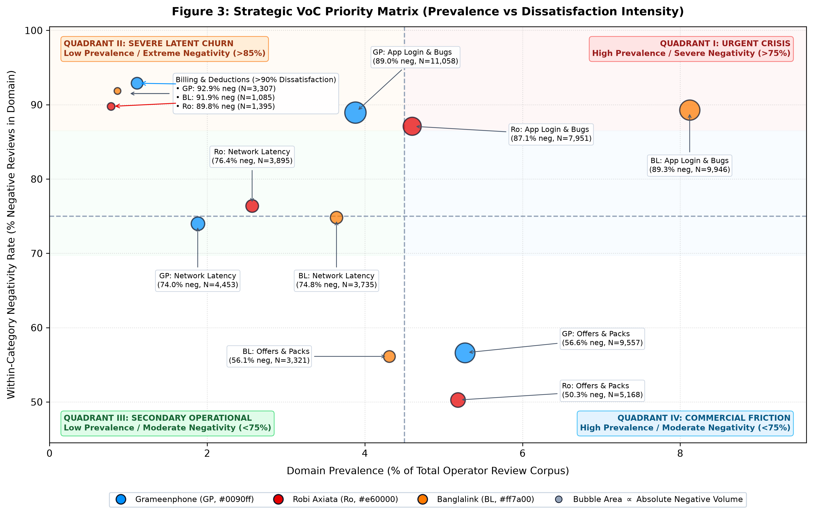
App Login & Technical Bugs: Pooled $88.5\%$ negative ($28,955 / 32,701$). $\text{OR} = 6.44$ (95% CI: $[6.18, 6.70]$) vs. Offers, and $\text{OR} = 2.57$ (95% CI: $[2.45, 2.70]$) vs. Network. Immediate client software patch required.
Billing & Airtime Deductions: Pooled $91.9\%$ negative ($5,787 / 6,295$). $\text{OR} = 9.49$ (95% CI: $[8.64, 10.42]$) vs. Offers. Highest dissatisfaction toxicity in the telecom sector; demands transparent balance deduction logs.
Network Speed & 4G Latency: Pooled $75.0\%$ negative ($12,083 / 16,108$). $\text{OR} = 2.50$ (95% CI: $[2.40, 2.61]$) vs. Offers. Baseline cellular infrastructure expectation; stable across all operators.
Offers & Data Packs: Pooled $54.6\%$ negative ($18,046 / 33,077$). Reference category ($\text{OR} = 1.00$). High commercial engagement with significant positive commendations for promotional pricing.
Empirical Multi-Paradigm Benchmark Suite
Models evaluated via 5-Fold Stratified Cross-Validation on 4,500 curated seed reviews and validated against a zero-leakage blind human gold standard:
1. Sentiment Polarity (3-Class)
BanglaBERT Leader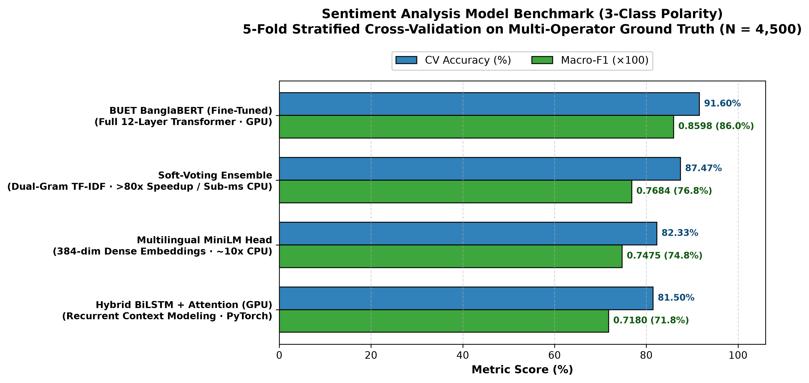
| Model | Accuracy | Macro-F1 | Latency |
|---|---|---|---|
| 🥇 BUET BanglaBERT | 91.60% | 0.8598 | GPU Batched |
| 🥈 Soft-Voting Ensemble | 87.47% | 0.7684 | >80× (Sub-ms CPU) |
| 🥉 Multilingual MiniLM | 82.33% | 0.7475 | ~10× (Dense CPU) |
| 4. Hybrid BiLSTM + Attn | 81.50% | 0.7180 | GPU Batched |
2. Operational Category (5-Class)
Ensemble Leader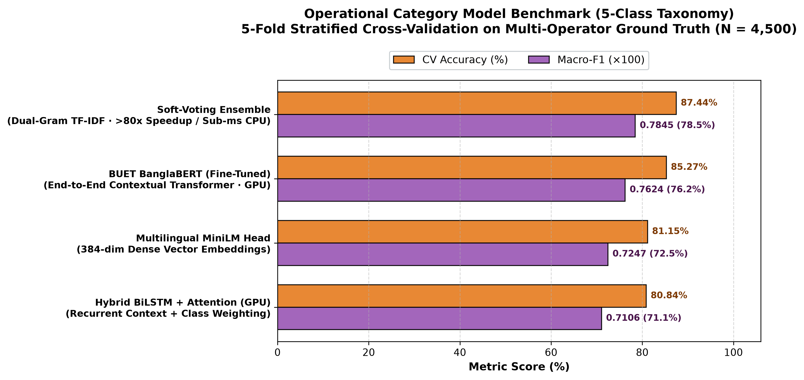
| Model | Accuracy | Macro-F1 | Latency |
|---|---|---|---|
| 🥇 Soft-Voting Ensemble | 87.44% | 0.7845 | >80× (Sub-ms CPU) |
| 🥈 BUET BanglaBERT | 85.27% | 0.7624 | GPU Batched |
| 🥉 Multilingual MiniLM | 81.15% | 0.7247 | ~10× (Dense CPU) |
| 4. Hybrid BiLSTM + Attn | 80.84% | 0.7106 | GPU Batched |
Zero-Leakage Human Gold Standard & Inter-Annotator Agreement
Evaluated across an overlapping stratified cohort (N = 200 pairs across all three operators) evaluated by two independent human reviewers:
- Operational Category: 95.41% Raw Agreement | κ = 0.7694 (Substantial)
- Sentiment Polarity: 91.00% Raw Agreement | κ = 0.5762 (Moderate)
On consensus reviews (where both independent human annotators agreed 100%), the production Soft-Voting Ensemble reaches:
- Operational Category: 94.12% Agreement on human consensus
- Sentiment Polarity: 87.91% Agreement on human consensus
Operator Strategic Roadmaps & Competitive Levers
Grameenphone (MyGP)
Scale AnchorStrategic Lever: Deploy dynamic micro-packs with rollover validity and a zero-click "Where Did My Balance Go?" transaction timeline to curb airtime deduction grievances.
Robi (My Robi)
NSS LeaderStrategic Lever: Overhaul biometric login token caching to resolve recurring session timeout crashes, and simplify automated VAS cancellation toggles.
Banglalink (MyBL)
Agile Value LeaderStrategic Lever: Capitalize on market-leading +81.9% sentiment to transition promotional micro-rechargers into recurring monthly commitments while optimizing 4G edge caching.
Executive Operational Decision Matrix: Alert Levels 1–4
Translating real-time VoC telemetry into formal operational SLAs, preventing misrouted CapEx field dispatches.
| Alert Level | Statistical Trigger | Primary Subsystem | Diagnostic Symptom Profile | Prescriptive Operational Triage Action | Strategic Business Objective |
|---|---|---|---|---|---|
| Level 1 (Routine) | $p \ge 0.05, |\Delta\text{NSS}| < 5.0$ | Balanced across categories | Normal background feedback; non-systemic friction. | Standard customer service queue; routine sprint backlog logging. | Maintain baseline satisfaction. |
| Level 2 (Warning) | $p < 0.05, 5.0 \le |\Delta\text{NSS}| < 10.0$ | Offers & Data Packs | Price sensitivity backlash; promo validity expiration friction. | Alert Commercial Division; re-evaluate bundle validity & pricing. | Commercial churn mitigation & pricing retention. |
| Level 3 (Critical Circuit) | $p < 0.01, \Delta\text{NSS} \le -10.0$ | Client App Software | Fatal build crash; authentication gateway token timeout. | Immediate CI/CD canary freeze; rollback to previous stable APK; zero RF field dispatch. | Protect high-CLV digital subscribers. |
| Level 4 (Promotional Distortion) | $\Delta V \ge 50\%, \Delta\text{Gen} \ge 5.0$ | General Appreciation | Sudden review rate surge; cluster of generic 5-star praise strings. | Deploy Dual-Track Surge-Adjust Filter (Rule 2); isolate Track A for engineering evaluation. | Prevent executive complacency from promo noise. |
Establish independent Service Level Agreements: Core Infrastructure SLA (tower uptime, RF throughput) vs. Digital Gateway SLA (app login latency, token refresh stability).
Dual-Track Surge-Adjusted Triage: separate Track A operational engineering metrics from Track B promotional surges to prevent marketing noise from masking software defects.
Automate CI/CD release gating (Algorithm 1) to abort rollout immediately upon detecting statistically significant spikes in authentication crashes.
Audit in-app feedback prompt timing to prevent inorganic rating manipulation following success events (e.g. prompt immediately after recharge vs after failed login).
Canary Release Gating Protocol: Algorithm 1
Real-time semantic circuit breaker operating alongside APM crash reporters for silent authentication degradation.
Traditional APM crash loggers (e.g., Firebase Crashlytics) only catch fatal uncaught exceptions. They remain blind to semantic failures: infinite splash-screen freezes, silent OTP timeouts, or broken biometric prompts. Algorithm 1 serves as an automated early-warning circuit breaker for these user-facing disruptions.
- Baseline $p_{\text{base}} = 0.046$: Historical 4.6% complaint rate for login issues across stable periods.
- Abort $\tau_{\text{abort}} = 0.12$: Emergency circuit breaks when defect frequency exceeds 12%.
- Window $W \in [30, 100]$: Sufficient statistical power while detecting issues within minutes of canary deployment.
Interactive Gradio Demo, Cloud Tooling & 8-Module Integrity Audit
Interactive Web Demo (demo/app.py)
Gradio 4.0+
A standalone real-time diagnostic web GUI implemented with gradio.Blocks in demo/app.py. The interface preloads the calibrated Tri-Classifier Ensemble and Language Detector, providing instant inference with sub-millisecond CPU execution:
- Language & Code-Mixing: Auto-detects Bangla, Banglish, English, or intra-sentential mixing.
- Sentiment Polarity: Top-3 probability distribution (Positive, Neutral, Negative).
- Operational Domain: Top-5 category distribution with Platt-calibrated confidences.
- Subsystem Attribution: Routes to Client App vs Core Cellular RF vs Commercial billing triage.
python demo/app.py --server_port 7860
Cloud GPU Suites & HF Deployment Helper
Colab & HF HubCloud acceleration suites configured for reproducible GPU training on NVIDIA T4 instances alongside automated Hugging Face Hub packaging tools:
telecom_voc_master_unified_colab.ipynb
Unified end-to-end ML, BiLSTM+Attention, and MiniLM training with 1-click artifact export.
telecom_voc_banglabert_finetuning_colab.ipynb
5-Fold Stratified CV & full 12-layer fine-tuning of csebuetnlp/banglabert (110M parameters).
dl/telecom_voc_deep_learning_colab.ipynb
Dedicated sentiment deep-learning benchmarking suite running on PyTorch CUDA.
scripts/upload_to_huggingface.py):
CLI tool generating automated model cards with 2-line transformers.pipeline("text-classification", model=...) usage snippets for production deployment.
8-Module Automated Project Integrity Audit (scripts/audit_project_integrity.py)
Comprehensive regression test suite asserting exact mathematical invariants across the entire 655,649-review research codebase.
Verifies row integrity ($N = 655,649$), operator splits (GP $320,140$, Robi $198,378$, BL $137,131$), exact common dates (2016-08-01 to 2026-09-30), and zero null labels.
Verifies zero data leakage between seed training sets ($N = 4,499$) and blind human gold sets ($N = 300$, inter-annotator agreement $\kappa = 0.5762$ sentiment, $\kappa = 0.5369$ category).
Verifies 5-fold cross-validation accuracies and Macro-F1 across all models, ensuring exact reproducibility of leaderboard benchmarks.
Verifies linear additivity with exact zero residual ($|\text{residual}| < 10^{-5}$) across all 240 modern month-over-month transitions.
Asserts time-series aggregation stability and mathematically validates the $-44.5\%$ Banglalink volatility compression under surge filtering.
Executes live hypothesis tests confirming Proposition 1 & 2 ($\chi^2(1) = 12.83, p = 0.0003, \text{OR} = 4.23$, non-surge $\text{OR} = 3.65$).
Validates version-level telemetry isolation across the Spring 2024 natural experiment (v11.8.0 crash shock vs v11.9.1 hotfix).
Performs strict automated scanning of manuscript deliverables, code modules, and figure vector exports for zero anonymization leakage.
python scripts/audit_project_integrity.pyThe complete automated scraping harness, bilingual preprocessing pipeline, model training suites (BanglaBERT, RoBERTa, FastText, and voting ensembles), statistical shock attribution calculations, and Power BI semantic data models are open-sourced for research reproduction and auditing.
git clone https://github.com/rh61632/telecom-Voice-of-Customer_intelligence.git